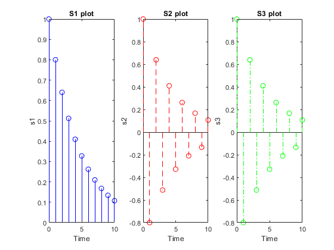
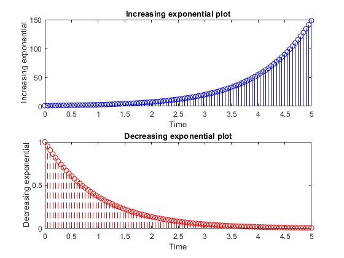
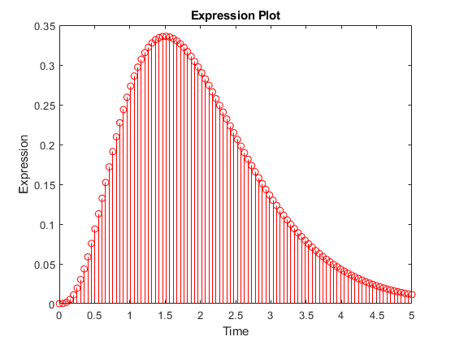
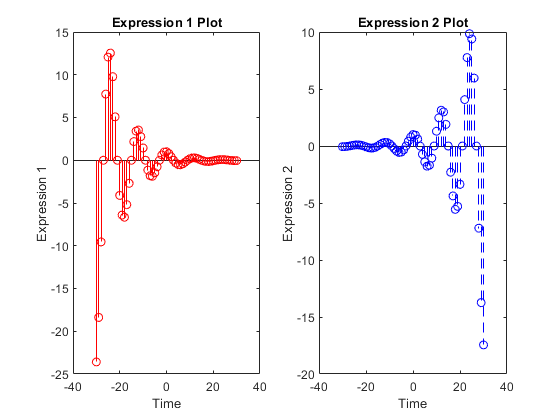

Pratik Ravikumar Sanghavi (2017AAPS0394G)
Contents
Lab Practice Assignment 1
Program Initialization
clc;
clear all;
close all;
Problem 1
Variable initialization
n=0:10;
s1=(0.8).^n;
s2=(-0.8).^n;
s3=(1.2).^n;
Plot Generation
figure(1);
subplot(1,3,1);
stem(n,s1,'b-');
title('S1 plot');
xlabel('Time');
ylabel('s1');
subplot(1,3,2);
stem(n,s2,'r--');
title('S2 plot');
xlabel('Time');
ylabel('s2');
subplot(1,3,3);
stem(n,s2,'g-.');
title('S3 plot');
xlabel('Time');
ylabel('s3');

Problem 2
Variable Initialization
n=linspace(0,5);
incexp=exp(n);
decexp=exp(-n);
Plot Generation
figure(2);
subplot(2,1,1);
stem(n,incexp,'b-');
title('Increasing exponential plot');
xlabel('Time');
ylabel('Increasing exponential');
subplot(2,1,2);
stem(n,decexp,'r--');
title('Decreasing exponential plot');
xlabel('Time');
ylabel('Decreasing exponential');

Problem 3
Variable Initialization
n=linspace(0,5);
expr=2*(n.^3).*exp(-2*n);
Plot Generation
figure(3);
stem(n,expr,'r-');
title('Expression Plot');
xlabel('Time');
ylabel('Expression');

Problem 4
Variable Initialization
n=-30:30;
expr1=(0.9).^n.*cos(pi*n./6);
expr2=(1.1).^n.*cos(pi*n./6);
Plot Generation
figure(4);
subplot(1,2,1);
stem(n,expr1,'r-');
title('Expression 1 Plot');
xlabel('Time');
ylabel('Expression 1');
subplot(1,2,2);
stem(n,expr2,'b--');
title('Expression 2 Plot');
xlabel('Time');
ylabel('Expression 2');
